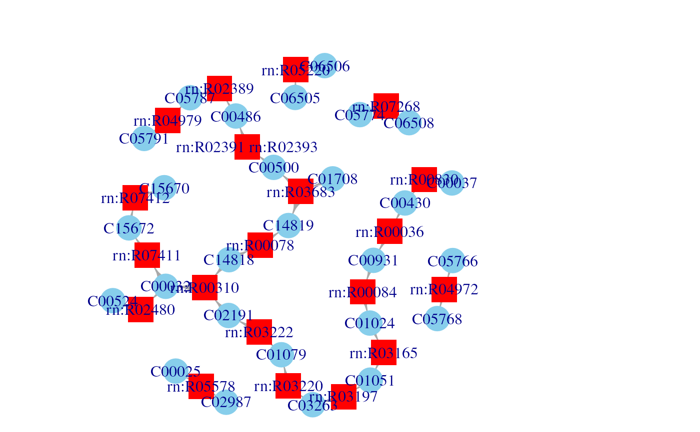
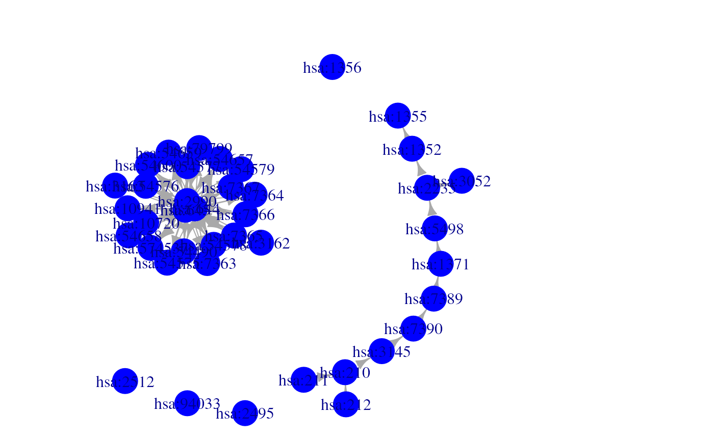

This function takes KGML files as input, and returns either a metabolic or a signaling network as output.
KGML2igraph(
filename,
parse.as = c("metabolic", "signaling"),
expand.complexes = FALSE,
verbose = TRUE
)A character vector containing the KGML files to be processed. If a directory path is provided, all *.xml files in it and its subdirectories are included.
Whether to process file into a metabolic or a signaling network.
Split protein complexes into individual gene nodes. This argument is
ignored if parse.as="metabolic"
Whether to display the progress of the function.
An igraph object, representing a metbolic or a signaling network.
Users can specify whether files are processes as metabolic or signaling networks.
Metabolic networks are given as bipartite graphs, where metabolites and reactions represent
vertex types. This is constructed from <reaction> xml node in KGML file, connecting them
to their corresponding substrates and products. Each reaction vertex has genes attribute,
listing all genes associated with the reaction. As a general rule, reactions inherit all annotation
attributes of its catalyzig genes.
Signaling network have genes as vertices and edges represent interactions, such as activiation / inhibition. Genes participating in successive reactions are also connected. Signaling parsing method processes <ECrel>, <PPrel> and <PCrel> interactions from KGML files.
To generate a genome scale network, simply provide a list of files to be parsed, or put all
file in a directory, as pass the directory path as filename
Other Database extraction methods:
SBML2igraph(),
biopax2igraph()
if(is.loaded("readkgmlfile")){ # This is false if libxml2 wasn't available at installation.
filename <- system.file("extdata", "hsa00860.xml", package="NetPathMiner")
# Process KGML file as a metabolic network
g <- KGML2igraph(filename)
plotNetwork(g)
# Process KGML file as a signaling network
g <- KGML2igraph(filename, parse.as="signaling", expand.complexes=TRUE)
plotNetwork(g)
}
#> Parsing KGML files as metabolic networks
#> Processing KGML file: /__w/_temp/Library/NetPathMiner/extdata/hsa00860.xml "Porphyrin and chlorophyll metabolism": 20 reactions found.
#> Files processed succefully. Building the igraph object.

#> Parsing KGML files as signaling networks
#> Processing KGML file: /__w/_temp/Library/NetPathMiner/extdata/hsa00860.xml "Porphyrin and chlorophyll metabolism": 17 gene relations found.
#> Files processed succefully. Building the igraph object.
